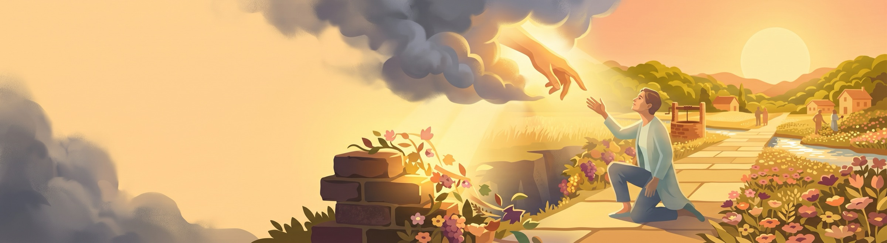
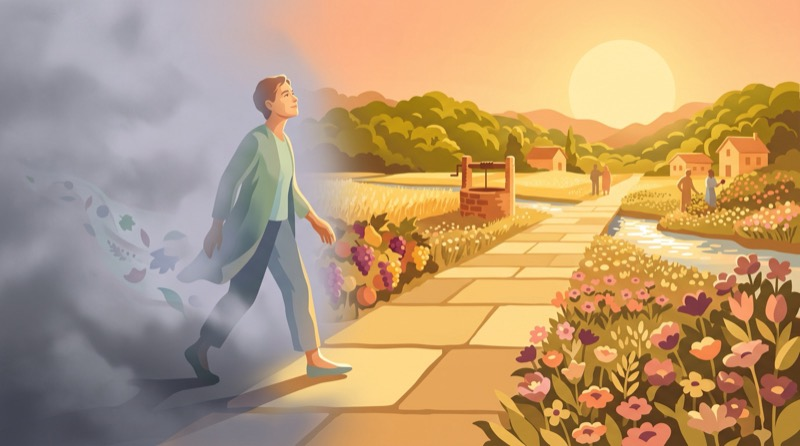
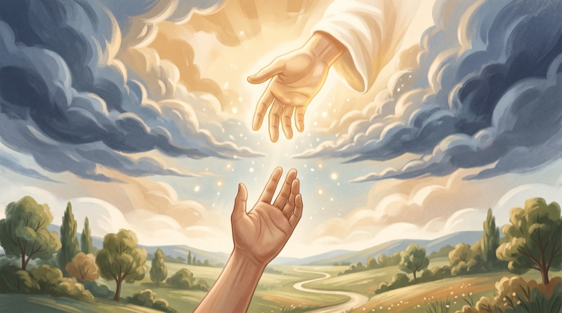
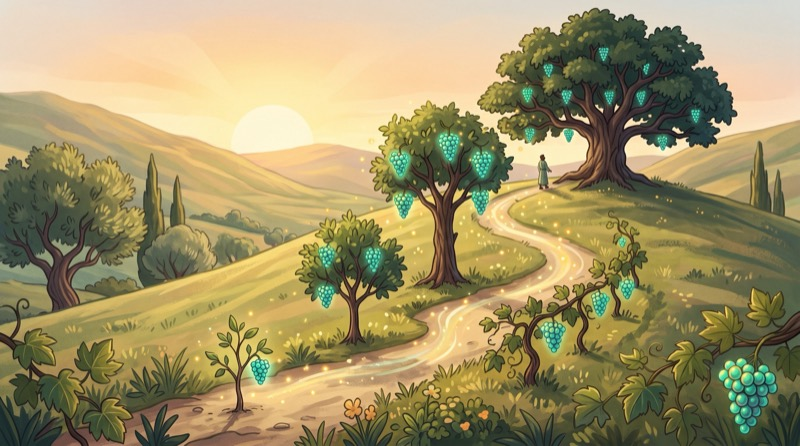

Четыре урока
Твоя новая жизнь
Онлайн-версия четырёх уроков. Читай по порядку, открывай указанные места Писания и записывай ответы прямо на странице — они сохраняются в твоём браузере.
Начать с урока 1 →-

Урок 1
ТВОЯ НОВАЯ ЖИЗНЬ
- Основа уверенности
- Истины новой жизни
- Ответ на сомнения
- Что делать дальше
-

Урок 2
СОХРАНЕНИЕ СВЯЗИ С БОГОМ
- Серьёзно относиться к греху
- Источник прощения
- Исповедь и прощение
- Пища для общения
-
Урок 3
«НО ВЫ ПРИМЕТЕ СИЛУ»
- Источник силы
- Три категории людей
- Исполниться Духом
- Духовное дыхание
-

Урок 4
КАК ВОЗРАСТАТЬ В НОВОЙ ЖИЗНИ ВО ХРИСТЕ?
- Оценить духовный рост
- Как возрастать со Христом
- Результаты роста
- Твоя роль в процессе